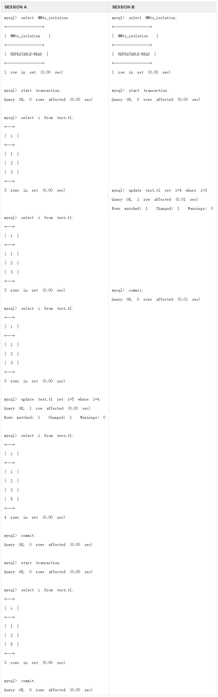
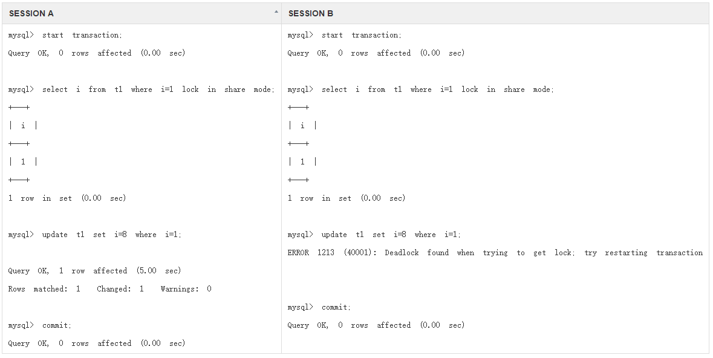

INNODB 存储引擎中的锁
类型
InnoDB 实现了如下两种类型的行锁：
共享锁(S Lock)
允许事务读取一行数据排它锁(X Lock)
允许事务更新或者删除一行数据
锁的兼容性
如果一个事务请求的锁模式与当前的锁兼容， InnoDB 就将请求的锁授予该事务: 反之, 如果两者不兼容,该事务就要等待锁释放.
排它锁和共享锁的兼容性
| X | S | |
|---|---|---|
| X | 不兼容 | 不兼容 |
| S | 不兼容 | 兼容 |
X S 锁都是行锁，兼容指的是对同一条记录(row)锁的兼容性
此外，InnoDB存储引擎还支持多粒度(granular)锁定，这种锁定允许事务在 行级上的锁 和 表级上的锁 同时锁定。
为了支持在不同粒度上的进行加锁操作，InnoDB存储引擎支持一种额外的加锁方式 意向锁(Intention Lock).意向锁将锁定的对象分为多个层次，意向锁意味着事务希望在更细粒度上进行加锁。
- 意向共享锁（IS）：事务打算给数据行加行共享锁，事务在给一个数据行加共享锁前必须先取得该表的 IS 锁。
- 意向排他锁（IX）：事务打算给数据行加行排他锁，事务在给一个数据行加排他锁前必须先取得该表的 IX 锁。
表级意向锁和行级意向锁的兼容性
| IS | IX | S | X | |
|---|---|---|---|---|
| IS | 兼容 | 兼容 | 兼容 | 不兼容 |
| IX | 兼容 | 兼容 | 不兼容 | 不兼容 |
| S | 兼容 | 不兼容 | 兼容 | 不兼容 |
| X | 不兼容 | 不兼容 | 不兼容 | 不兼容 |
InnoDB 加锁方式
- 意向锁是 InnoDB 自动加的， 不需用户干预。
- 对于 UPDATE、 DELETE 和 INSERT 语句， InnoDB
会自动给涉及数据集加排他锁（X)； - 对于普通 SELECT 语句，InnoDB 不会加任何锁；
事务可以通过以下语句显式给记录集加共享锁或排他锁：- 共享锁（S）：SELECT * FROM table_name WHERE … LOCK IN SHARE MODE。 其他 session 仍然可以查询记录，并也可以对该记录加 share mode 的共享锁。但是如果当前事务需要对该记录进行更新操作，则很有可能造成死锁。
- 排他锁（X)：SELECT * FROM table_name WHERE … FOR UPDATE。其他 session 可以查询该记录，但是不能对该记录加共享锁或排他锁，而是等待获得锁
一致性非锁定读
一致性非锁定读是InnoDB存储引擎通过多版本控制（multi versioning 的方式来读取当前执行时间数据库中的数据。如果被读的数据行被加了排他锁，在读取这行数据的时候并不会等待锁释放，而是读取该行的一个快照数据。 之所以称为非锁定读，因为不需要等待被访问行的X锁的释放。快照数据是指修改行之前的数据版本，该实现通过undo段来完成。非锁定读的方式极大提高了数据库的并发性。在InnoDB存储引擎中，这是默认的读取方式。
快照数据其实就是当前行数据的一个历史版本，每行记录可能有多个版本。这种技术成为行多版本技术。由此带来的并发控制，称为多版本并发控制(MVCC)
在事务的隔离级别 READ COMMITED和REPEATABLE READ (InnoDB存储引擎默认的事物隔离级别)下，对快照数据的定义不同。
- 在
READ COMMITTED事务隔离级别下
同一事务内的一致性读均会读取到该事务中第一个读创建的快照，其他事务在之后提交或未提交的更新对当前事务的读均不可见，除非提交了该事务并开启新事务发起新查询。 - 在
REPEATABLE READ事务隔离级别下
事务内的每个一致性读均会设置和读取自己新鲜的快照。其他事务在之后提交的更新对当前事务的读可见，未提交的更新对当前事务不可见。
一致性读 是 InnoDB引擎 处理 READ COMMIT 和 REPEATABLE READ 隔离级别中 SELECT 的默认方式，不需要对 SELECT 访问的对象加锁，其他 session 中的事务可以在另一 session 中的事务读去的同时自由的修改相关对象，因此称为非锁定一致性读。
1 | # 查看当前数据库的 事务隔离级别 |

起初事务的隔离级别均为REPEATABLE-READ。SESSION 读取的内容为i=1,2,3的行，在 SESSION B 中的事务更新了 i=3 的行后 SESSION A 查询到的内容并没有改变，即时在 SESSION B 提交了该更新后 SESSION A 仍只能看到最开始的一致性读创建的快照。但是，在 SESSION A 中的事务执行UPDATE语句更新了被 SESSION B 更新的记录后（数据库快照只适用于SELECT语句，不适用与DML语句，所以事务中的DML语句是可以看到 其他session 中的事务的更新的，即使SELECT并不能看到这些）再次执行SELECT语句不仅可以看到快照中的数据，还可以看到更新后的数据。
上述提到的一致性读由多版本并发控制（MVCC）原理实现（利用了InnoDB的undo log）。需要注意的是，一致性读不适用于特定的DDL语句如DROP TABLE、ALTER TABLE。另外，对于 INSERT INTO … SELECT, UPDATE … (SELECT)和CREATE TABLE … SELECT 中未指定FOR UPDATE或LOCK IN SHARE MODE的SELECT默认情况下行为和READ COMMIT隔离级别下的普通SELECT一样，同一事务内设置和读取自己的新鲜快照。
一致性锁定读
锁定读。顾名思义，非锁定一致性读在某个事务读取记录时不加任何锁其他事务可以修改记录，而锁定读意味着某个事务读取记录时会加锁。锁定读分为两种类型：SELECT...FOR UPDATE 和 SELECT...LOCK IN SHARE MODE，前者会对读取的记录加X锁，阻塞其他事务的读请求和修改请求，直至事务提交释放锁资源；后者会对读取的记录加S锁，阻塞其他事务的修改请求但不会阻塞读取请求，直至事务提交释放锁资源。也正因为SELECT...FOR UPDATE 和 SELECT...LOCK IN SHARE MODE 分别需要对查询的记录加X锁和S锁，因此分别会被其他正在读写和写的事务阻塞，直到这些事务结束。需要注意的是SELECT...FOR UPDATE仅适用于autocommit=0 或者通过START TRANSACTION明确开启事务的情况。
因为锁定读会阻塞其他事务的修改请求，因此可以有效解决非锁定一致性读中提到的”异常”，也即，一个事务执行了普通SELECT后若其他的事务更新、插入了记录并提交，那么该事务内执行DML操作更新被其他事务更新或插入的记录后再次执行SELECT操作会看到更新后的结果。(非锁定一致性读的示例)
锁定读的一个典型应用常场景
(先查询, 后更新 的操作)
假如要往子表插入一条记录，插入前首先要确认一下父表有无相关记录，只有在父表有对应记录时插入才能满足引用完整性约束。如果使用一致性读来查询父表来验证相关行存在，此时往子表插入时 其他的session 有可能更新或者删除刚才父表中查到的行，这样在子表中插入后就违反了引用完整性约束。为了避免该问题可使用锁定读SELECT...LOCK IN SHARE MODE，在事务中读取父表进行验证时，对相关记录加S锁，这样其他事务无法对相关记录进行DML操作，此时可在事务中安全的插入相关记录，待此操作完成并提交或回滚后其他事务才能对记录进行DML操作。
还有一种情况，比如有 两个session 需要读取某表中的一行，在成功读取后在同一事务中更新该行，并在另外的表中插入刚开始读取到的行。若此时使用SELECT...LOCK IN SHARE MODE则会对读取到的记录加S锁，两个session在同时申请X锁进行更新时便发生死锁。另外，由于读取到了同一行内容，两个session在向同一表插入数据时会导致键重复的错误。这种情况下用SELECT…FOR UPDATE较合适，在读取的时候阻塞其他事物的读和更新请求。
